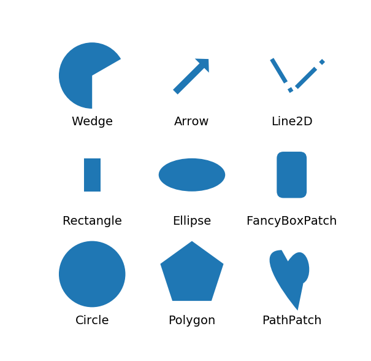
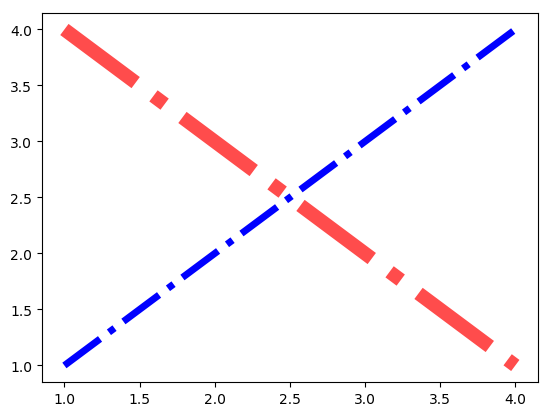
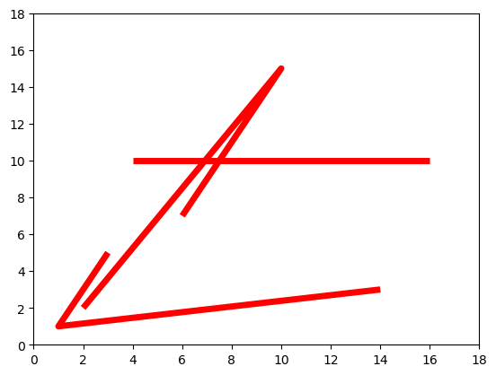
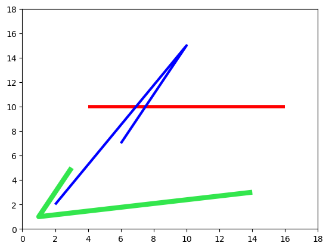
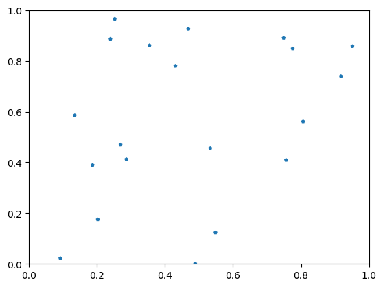
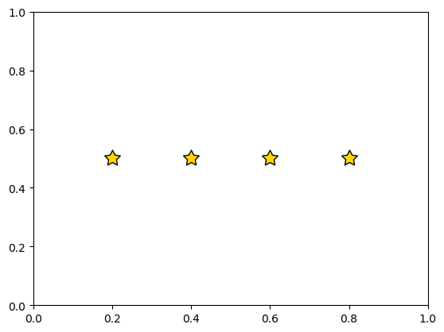

Matplotlib 第五课
Table of Contents
1 part-IV, Limits, Legends, and Layouts
from __future__ import print_function import matplotlib import numpy as np import matplotlib.pyplot as plt
1.1 Artists
Anything can draw or can be draw is an Artist.
- Figure Artist.
- Axes Artist.
- plot Artist.
- bar Artist.
- scatter Artist.
- etc.
There are two main classes of Artists: primatives and containers. Below
is a sample of these primitives.
1.1.1 Primative Artists
primitives Artist:
- wedge artist
- arrow artist
- line2D artist
- rectangle artist
- ellipse artist
- fancyBoxPatch artist
- etc
from matplotlib.collections import PatchCollection import matplotlib.path as mpath import matplotlib.patches as mpatches import matplotlib.lines as mlines fig, ax = plt.subplots(1, 1, figsize=(7,7)) # create 3x3 grid to plot the artists pos = np.mgrid[0.2:0.8:3j, 0.2:0.8:3j].reshape(2, -1) # <- '-1' means I don't care, you compute it for me. patches = [] # add a circle art = mpatches.Circle(pos[:, 0], 0.1, ec="none") patches.append(art) plt.text(pos[0, 0], pos[1, 0] - 0.15, "Circle", ha="center", size=14) # add a rectangle art = mpatches.Rectangle(pos[:, 1] - [0.025, 0.05], 0.05, 0.1, ec="none") patches.append(art) plt.text(pos[0, 1], pos[1, 1] - 0.15, "Rectangle", ha="center", size=14) # add a wedge wedge = mpatches.Wedge(pos[:, 2], 0.1, 30, 270, ec="none") patches.append(wedge) plt.text(pos[0, 2], pos[1, 2] - 0.15, "Wedge", ha="center", size=14) # add a Polygon polygon = mpatches.RegularPolygon(pos[:, 3], 5, 0.1) patches.append(polygon) plt.text(pos[0, 3], pos[1, 3] - 0.15, "Polygon", ha="center", size=14) #add an ellipse ellipse = mpatches.Ellipse(pos[:, 4], 0.2, 0.1) patches.append(ellipse) plt.text(pos[0, 4], pos[1, 4] - 0.15, "Ellipse", ha="center", size=14) #add an arrow arrow = mpatches.Arrow(pos[0, 5] - 0.05, pos[1, 5] - 0.05, 0.1, 0.1, width=0.1) patches.append(arrow) plt.text(pos[0, 5], pos[1, 5] - 0.15, "Arrow", ha="center", size=14) # add a path patch Path = mpath.Path verts = np.array([ (0.158, -0.257), (0.035, -0.11), (-0.175, 0.20), (0.0375, 0.20), (0.085, 0.115), (0.22, 0.32), (0.3, 0.005), (0.20, -0.05), (0.158, -0.257), ]) verts = verts - verts.mean(0) codes = [Path.MOVETO, Path.CURVE4, Path.CURVE4, Path.CURVE4, Path.LINETO, Path.CURVE4, Path.CURVE4, Path.CURVE4, Path.CLOSEPOLY] path = mpath.Path(verts / 2.5 + pos[:, 6], codes) patch = mpatches.PathPatch(path) patches.append(patch) plt.text(pos[0, 6], pos[1, 6] - 0.15, "PathPatch", ha="center", size=14) # add a fancy box fancybox = mpatches.FancyBboxPatch( pos[:, 7] - [0.025, 0.05], 0.05, 0.1, boxstyle=mpatches.BoxStyle("Round", pad=0.02)) patches.append(fancybox) plt.text(pos[0, 7], pos[1, 7] - 0.15, "FancyBoxPatch", ha="center", size=14) # add a line x,y = np.array([[-0.06, 0.0, 0.1], [0.05,-0.05, 0.05]]) line = mlines.Line2D(x+pos[0, 8], y+pos[1, 8], lw=5.) plt.text(pos[0, 8], pos[1, 8] - 0.15, "Line2D", ha="center", size=14) collection = PatchCollection(patches) ax.add_collection(collection) ax.add_line(line) ax.set_axis_off() plt.show()

1.1.2 Container Artists
Containers are objects like Figure and Axes. Containers are given primitives to draw. The plotting functions we discussed back in Parts 1 & 2 are convenience functions that generate these primitives and places them into the appropriate containers. In fact, most of those functions will return artist objects (or a list of artist objects) as well as store them into the appropriate axes container.
As discussed in Part 3, there is a wide range of properties that can be defined for your plots. These properties are processed and applied to their primitives. Ultimately, you can override anything you want just by directly setting a property to the object itself.
fig, ax = plt.subplots(1, 1) lines = plt.plot([1, 2, 3, 4], [1, 2, 3, 4], 'b', [1, 2, 3, 4], [4, 3, 2, 1], 'r') lines[0].set(linewidth=5) lines[1].set(linewidth=10, alpha=0.7) plt.show()

To see what properties are set for an artist, use getp()
fig = plt.figure() print(plt.getp(fig.patch)) plt.close(fig)
1.2 Collections
Collections In addition to the Figure and Axes containers, there is another
special type of container called a Collection. A Collection usually contains a
list of primitives of the same kind that should all be treated similiarly. For
example, a CircleCollection would have a list of Circle objects all with the
same color, size, and edge width. Individual property values for artists in the
collection can also be set (in some cases).
1.2.1 do settings to all items of collection
. do settings to all items . | . v . 3 lines ---> collections ---> ---> axes ---> show()
from matplotlib.collections import LineCollection fig, ax = plt.subplots(1, 1) # <- create figure and axes # A collection of 3 lines lc = LineCollection([[(4, 10), (16, 10)], # <- create a collection of 3lines [(2, 2), (10, 15), (6, 7)], [(14, 3), (1, 1), (3, 5)]]) lc.set_color('r') # <- do some settings to all lines lc.set_linewidth(5) # inside of this collection ax.add_collection(lc) # <- add this collection to axes created above ax.set_xlim(0, 18) ax.set_ylim(0, 18) plt.show()

1.2.2 do settings to separate items of collection
# Now set individual properties in a collection fig, ax = plt.subplots(1, 1) lc = LineCollection([[(4, 10), (16, 10)], [(2, 2), (10, 15), (6, 7)], [(14, 3), (1, 1), (3, 5)]]) lc.set_color(['r', 'blue', (0.2, 0.9, 0.3)]) # <- do separate settings in an array lc.set_linewidth([4, 3, 6]) # <- do separate settings in an array ax.add_collection(lc) # <- add collection to axes ax.set_xlim(0, 18) ax.set_ylim(0, 18) plt.show()

1.2.3 more specified collection
There are other kinds of collections that are not just simply a list of
primitives, but are Artists in their own right. These special kinds of
collections take advantage of various optimizations that can be assumed when
rendering similar or identical things. You use these collections all the time
whether you realize it or not! Markers are implemented this way (so, whenever
you do plot() or scatter(), for example).
eg:
RegularPolyCollectionclassStarPolygonCollectionclass
1.2.4 RegularPolyCollection
from matplotlib.collections import RegularPolyCollection fig, ax = plt.subplots(1, 1) offsets = np.random.rand(20, 2) # <- produce the 2-D location of 20 polygon collection = RegularPolyCollection( # <- create a RegularPolyCollection numsides=5, # <- all polygon have 5 sides sizes=(15,), # <- give each column of polygon the size, # for 2D collection:(x,y), for 3D collection:(x,y,z) offsets=offsets, # <- give location of all polygon transOffset=ax.transData, ) ax.add_collection(collection) plt.show()

1.2.5 StarPolygonCollection
from matplotlib.collections import StarPolygonCollection fig, ax = plt.subplots(1,1) offsets = zip([0.2,0.4,0.6,0.8], [0.5]*4) offsets = [[i,j] for i,j in offsets] collection = StarPolygonCollection( 5, # <- all StartPolygons have 5 angles offsets=offsets, # <- all location of each StartPolygon transOffset=ax.transData, facecolors=['gold'], # <- facecolors, you can give each a color sizes=[175], edgecolors=['k'] # <- edgecolors, you can give each a color ) ax.add_collection(collection) plt.show()
